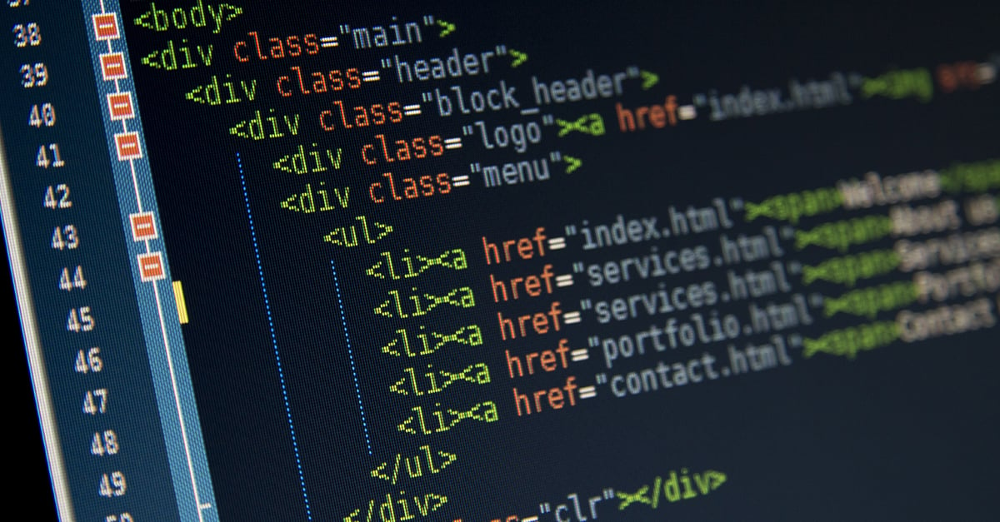

Fundamentos de las Tecnologías Web
Definición y Conceptos Clave
Esta semana se centró en entender los pilares básicos de la web. Un sistema web es una colección de páginas interconectadas accesibles a través de Internet. Una aplicación web es un programa que los usuarios pueden utilizar accediendo a un servidor web.
Un sitio web es un conjunto de páginas web relacionadas, y una página web es un documento individual en la web. Las tecnologías web como HTML, CSS, JS y XML son esenciales para crear y estructurar contenido en la web.
El DNS traduce nombres de dominio a direcciones IP, el protocolo TCP/IP permite la comunicación entre dispositivos, y el protocolo HTTP es utilizado para transferir datos en la web.
Ejemplo Práctico
Objetivo: Creación de un archivo HTML básico y navegación local.
<!DOCTYPE html>
<html lang="es">
<head>
<meta charset="UTF-8">
<title>Mi Primera Página</title>
</head>
<body>
<h1>Hola Mundo</h1>
<p>Esta es mi primera página web</p>
</body>
</html>Tecnologías Aprendidas
- HTML: Estructura básica de documentos web
- Protocolos: HTTP, TCP/IP, DNS
- Herramientas: VS Code, navegadores web
- Conceptos: Cliente-servidor, arquitectura web
Reflexión Personal
Aprendí la arquitectura básica del internet, el propósito de los protocolos y cómo usar eficientemente VS Code. Esta semana fue crucial para entender cómo se estructuran y despliegan las páginas web.
La comprensión de estos fundamentos me proporcionó una base sólida para las tecnologías más avanzadas que vendría en las siguientes semanas.